Плагин Auto Fx (часть 5)
Фильтры группы Shading (Затенение)
Название самой группы говорит о назначении фильтров в нее входящих. В состав группы Shading (Затенение) входит 5 фильтров, в отличие от группы фильтров для работы со светами.
Фильтры Black Shade (Затемнить черным) и Deepen Shadows (Глубина теней)
Оба эти фильтра добавляют тень в изображение, либо с их помощью можно просто затемнить изображение, хотя в фильтре Black Shade (Затемнить черным) этот эффект проявляется сильнее. Добавление тени – не частый прием при коррекции фото, но в коллажировании или при создании рисунка с нуля, такой эффект может пригодиться гораздо чаще. Также, мне достаточно сложно подобрать такое изображение, где применение этих фильтров было бы уместным. Основная разница между этими фильтрами в том, что фильтр Black Shade (Затемнить черным) работает глобально, а фильтр Deepen Shadows (Глубина теней) в режиме Кисти. Окно фильтра Black Shade (Затемнить черным) показано на рис. 1.
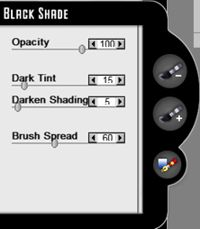
Этот фильтр остался для меня непонятным. У него тот же «баг» или недоработка, как и у фильтра Light Beams (Лучи света). Т. е. наличие инструмента Brush On Focal Areas (Кисть включающая в фокусируемую область) и ползунка Brush Spread (Разброс кисти) подразумевают наличие режима Brush On (Кисть), которого здесь нет. Также о работе в этом режиме недвусмысленно намекает подсказка к инструменту Brush On Focal Areas (Кисть включающая в фокусируемую область). Поэтому при использовании этих инструментов в фильтре Black Shade (Затемнить черным) я не увидел никаких изменений в результате их работы.
Кроме того обнаружилась некоторая неуклюжесть в работе с фильтром Black Shade (Затемнить черным). Глобальные результаты после его работы имеют свои минусы. Попытка отменить эффект в нужных местах с помощью Brush Off Focal Areas (Кисть исключающая фокусируемую область) также не дала нужного результата. Этот инструмент лишь частично ослабляет эффект, но к исходному состоянию изображение не возвращает. Это подразумевает необходимость применения масок. Также оставляет желать лучшего инструмент Focal Plain (Фокусная плоскость). Надо довольно основательно набить руку, чтобы правильно расположить путь для достижения нужного результата.
Но несмотря на все минусы этого фильтра, для придания тени на больших участках изображения и общего затенения картинки, лучшего инструмента и не надо.
Силу эффекта определяют два параметра:
Ползунок Dark Tint (Темный оттенок) – добавляет темный оттенок цвета и создает его перетекание к остальным участка изображения, где эффект затенения был применен глобально;
Ползунок Darken Shading (Затемнение оттенков) – задает тональную глубину затенения и темных участков изображения, позволяя получить более контрастный результат.
Увы, я так и не смог подобрать подходящего изображения для демонстрации этого эффекта. Но т. к. фильтр прост в освоении, вы при необходимости с легкостью им воспользуетесь.
Фильтр Deepen Shadows (Глубина теней) в отличие от предыдущего работает только в режиме Кисти. Окно фильтра показано на рис. 2.
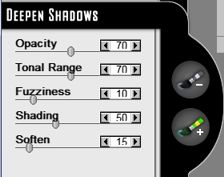
Возможность затенять участки с помощью кисти придает этому фильтру куда большую гибкость, чем предыдущему. Но без «подводных камней», как всегда никак. Один из таких недостатков, который в других фильтрах наоборот играет нам на руку, это влияние изменения параметров на уже обработанные участки. Сейчас я поясню о чем идет речь. Предположим, вам необходимо затенить разные участки изображения, но степень затенения также должна быть разной. Было бы удобно обработать один участок, затем поменяв параметры в фильтре, обработать другой участок изображения. Что происходит в этой ситуации… Вы закрашиваете один участок, затем начинаете менять параметры для обработки следующего участка. И вот досада, фильтр применил новые значения параметров к уже обработанному фрагменту. В этой ситуации есть два самых простых решения, которые приходят на ум. Первый вариант – сначала обработать часть изображения, нажать кнопку ОК в плагине, затем снова запустить плагин, вызвать фильтр и с новыми параметрами обработать следующий участок изображения. Второй вариант – не выходя из окна плагина повторно применить фильтр. Повторное использование фильтра не повлияет на имеющийся результат, т. к. фильтр работает в режиме Кисти. При этом в окне Layer Palette (Палитра слоев) добавится еще один слой Deepen Shadows (Глубина теней).
На рис. 3 показано исходное изображение.
Я решил затенить немного пики гор и снег на переднем плане и затенить дальнюю цепь гор и небо. Результат показан на рис. 4.
Чтобы выполнить разную степень затенения (на переднем плане тени более отчетливые и темные), пришлось воспользоваться повторным вызовом фильтра и только потом обработать дальнюю цепь гор и небо.
Фильтр Shaders (Построитель теней)
На мой взгляд, этот фильтр дает более симпатичные результаты, чем фильтр Black Shade (Затемнить черным), хотя приемы работы с ним практически такие же, да и работает он тоже глобально. Окно фильтра Shaders (Построитель теней) показано на рис. 5.
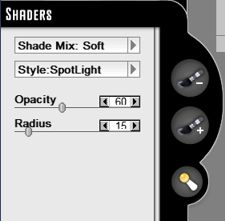
В этом фильтре имеется два выпадающих меню: Shade Mix (Смешивание теней) (рис. 6) дающее вам на выбор несколько различных режимов смешивания теней и Style (Стиль) (рис. 7), которое дает на выбор два стиля формы затенения.
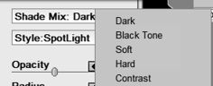
На рис. 8 показан результат действия фильтра в режиме Black Tone (Черный оттенок) с настройками по умолчанию. Сравните, например, рис. 8 и рис. 4.
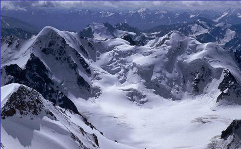
Как по мне, так результат более симпатичный, да к тому же получен автоматически.
Выбор режима в меню Shade Mix (Смешивание теней) довольно сильно влияет на конечный результат, поэтому стоит поэкспериментировать с ним, чтобы лучше познакомиться. На рис. 9 представлено исходное изображение.
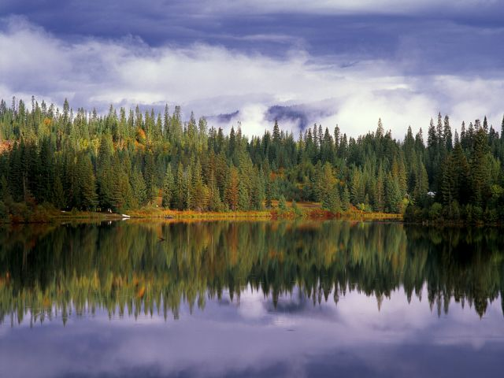
Можно было бы предположить, что это где-то вторая половина дня, во всяком случае, берег горного озера освещен достаточно хорошо. А вот на рис. 10 представлен результат действия фильтра в режиме Contrast (Контраст).
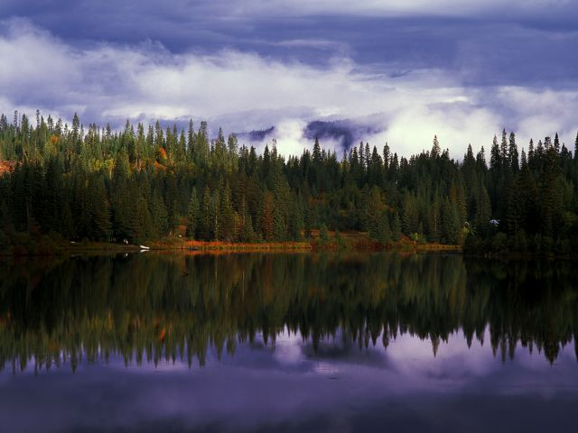
Такое ощущение, что солнце стоит гораздо ниже и дело идет к вечеру. Конечно, тут уже пришлось подправить настройки и направление распространения эффекта.
Раскрывающееся меню Style (Стиль) более скромно и предоставляет на выбор два источника света, Spotlight (Точечный источник света) и Sconce (Подсвечник). Стиль Spotlight (Точечный источник света) дает более широкий и плавный эффект, а Sconce (Подсвечник) более узкий и направленный.
Боковые элементы управления не вызовут у вас каких-либо вопросов (рис. 11).
Как и в случае с другими фильтрами, инструмент Brush On (Кисть) работать не хочет. А вот верхний инструмент, Shade Blocker (Блокиратор тени) выполняет нормально свою функцию и можно легко отменить эффект в тех местах, где он не нужен. Как и во многих предыдущих фильтрах, действие инструмента Shade Blocker (Блокиратор тени) можно отменить, обработав участок изображения им же, но удерживая нажатой клавишу Alt.
Нижний инструмент, Shader (Построитель теней), не что иное, как разновидность аналогичных инструментов, т. е. создает путь тени, а также позволяет его модифицировать. Путь тени имеет знакомую нам Т-образную форму.
Назначение двух ползунков в этом фильтре также очевидно. Ползунок Opacity (Непрозрачность) задает прозрачность эффекта, а ползунок Radius (Радиус) определяет протяженность и форму тени. Его воздействие на эффект будет также зависеть от выбора в меню Style (Стиль), т. к. он немного по-разному работает с Spotlight (Точечным источником света) и Sconce (Подсвечником).
Фильтры Shading Brush (Затеняющая Кисть) и Shadow Play (Игра теней)
Фильтр Shading Brush (Затеняющая Кисть) является разновидностью фильтров для подчеркивания теневых участков. Т. к. он работает в режиме Кисти, то это позволяет обрабатывать участки изображения произвольной формы. Работает этот фильтр мягко, что автоматически означает, применять его следует там, где необходимо совсем немного подкорректировать тень, либо создать не слишком контрастный участок тени. Окно фильтра показано на рис. 12.
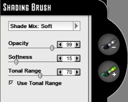
Раскрывающееся меню Shade Mix (Смешивание затенения) предоставляет доступ к различным режимам затенения (рис. 13).
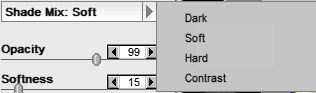
Эти режимы, по большому счету влияют на степень проявления эффекта и в каждом конкретном случае нужно подбирать наиболее подходящий.
Назначение остальных элементов управления интуитивно понятны и позволяют регулировать силу эффекта.
На рис. 14 показано исходное изображение.
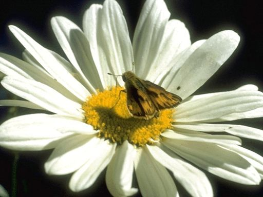
Предположим, вы хотите немного усилить тень на цветке отбрасываемую мотыльком. Это как раз хорошая возможность использовать фильтр Shading Brush (Затеняющая Кисть). На рис. 15 показан результат обработки тени мотылька в режиме Soft (Мягкий) с остальными параметрами по умолчанию.
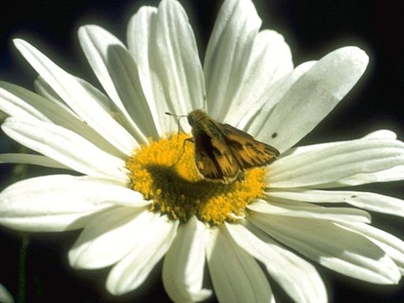
Тень стала темнее, однако она не стала абсолютно черной. В данном случае при необходимости можно сделать тень чуть мягче, подрегулировав непрозрачность кисти. Этим примером я хотел лишь подчеркнуть основное назначение фильтра – это небольшая коррекция тени, либо создание новой, легкой тени.
Фильтр Shadow Play (Игра теней)
Название фильтра отвечает его назначению. Этот фильтр действительно создает нечто наподобие игры теней. Окно фильтра показано на рис. 16.
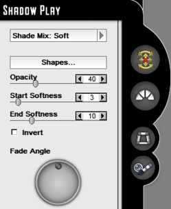
Т. к. сам фильтр имеет довольно специфическое предназначение, то и некоторые элементы управления также встречаются только здесь. Собственно, этот фильтр позволяет добавить в изображение тень, отбрасываемую предметами и настроить ее параметры. Отсюда вытекает следствие, что польза от этого фильтра может быть только в определенных изображениях, где необходимо наличие тени от предмета. Чуть ниже, вам станет ясно о чем речь.
Но сначала в двух словах об элементах управления… Выпадающее меню Shade Mix (Смешивание затенения) аналогично одноименному меню в фильтре Shading Brush (Затеняющая Кисть). Ниже этого меню расположена кнопка Shapes (Фигуры), нажатие которой приводит к открытию одноименного окна Shapes (Фигуры), с набором заготовок форм теней, отсортированных по категориям. Однако для удачного применения этого фильтра, необходимо поэкспериментировать с режимами в меню Shade Mix (Смешивание затенения), с целью усиления эффекта.
На рис. 17 показано исходное изображение, являющееся абстракцией и применяемое в качестве обоев Рабочего стола Windows. Т. к. размер этого изображения слишком большой, под стать его назначению, то я его маленько обрезал сверху и снизу и дополнительно значительно уменьшил, так что может выглядеть чуть хуже, чем в оригинальном варианте.
Теперь я решил разместить в центре тень бабочки (рис. 18).
Для этого я выбрал в меню Shade Mix (Смешивание затенения) режим Contrast (Контрастность). А в наборе заготовок Shapes (Фигуры), выбрал форму бабочки. Такого рода эффекты можно модифицировать под свой вкус. Например, я установил флажок Invert (Инвертировать) в окне фильтра и изменил режим на Dark (Темный). Затем уже в Photo-Paint наложил полученный результат на исходное изображение и изменив режим наложения на Hard Light, с дальнейшей корректировкой фильтром Brightness/Contrast/Intensity (Яркость/Контрастность/Интенсивность) получил такую картинку (рис. 19).
В данном случае я уж не стал сильно возиться для получения супер-эффекта, а всего лишь хотел подчеркнуть, что с помощью фильтра можно не только получать различные результаты, но и не следует забывать, что хороший кусок работы можно сделать в Photo-Paint, чтобы улучшить результаты работы фильтра.
Рассмотрим элементы «специфичные» элементы управления в окне фильтра. Интерактивный элемент управления Fade Angle (Угол затухания) позволяет задать угол, под которым будет происходить постепенное затухание эффекта. Величина этого затухания, равно как и сила проявления эффекта, задается с помощью двух ползунков, Start Softness (Начальная мягкость) и End Softness (Конечная мягкость). Эти элементы управления чем-то сродни элементу управления Opacity (Непрозрачность), т. к. в какой-то мере оказывают влияние и на прозрачность эффекта.
Рассмотрим вкратце боковые элементы управления (рис. 20).
Верхний элемент управления,Transform Effect (Преобразование эффекта), вам уже знаком. Дело в том, что при вызове окна фильтра, в области предварительного просмотра появляется ограничивающий прямоугольник с управляющими маркерами. Этот инструмент позволяет масштабировать, наклонять, вращать и т. п. этот ограничивающий прямоугольник, тем самым трансформируя и сам эффект.
Ниже находится «специфичный» элемент управления – Clone Effect (Клонирование эффекта). Здесь все понятно, он клонирует эффект, дополнительно создавая ограничивающий прямоугольник вокруг клона. Если эффекта в изображении еще нет, он просто создаст клон ограничивающего прямоугольника в точке изображения указанной вами.
Третий сверху инструмент – Perspective (Перспектива). Тут также все абсолютно понятно. Этот инструмент позволяет придать тени объекта перспективу, что как правило и необходимо сделать.
И наконец, последний элемент управления – Shadow Blocker (Блокиратор тени). Хотя сам элемент управления встречается и в других фильтрах, значок этого инструмента отличается. Назначение этого инструмента, «стереть» лишнюю часть тени.
Фильтры группы Ambiance (Окружение).
Название группы лучше перевести, как Окружающая среда, но для краткости я ее назвал Окружение. В состав этой группы входит восемь фильтров, позволяющих имитировать всевозможные варианты окружающей среды, например, туман, дым или радугу.
Я не буду рассматривать фильтры этой группы по нескольким причинам. Во-первых, часть этих фильтров повторяет эффекты, которые есть в фильтрах ранее нами рассмотренных. Во-вторых, порождаемые этими фильтрами эффекты, честно говоря, меня не сильно впечатлили. Правда, два фильтра все-таки мне понравились, это Mist (Пелена) и Rainbow (Радуга). Первый позволяет легко создать видимость легкой дымки или пелены тумана. Ну, а фильтр Rainbow (Радуга), естественно позволяет добавить в изображение радугу, причем делает это весьма эффективно. В-третьих, во всех этих фильтрах присутствуют рассмотренные нами элементы управления и вы легко сможете оценить сами преимущества и недостатки этих фильтров.
Этот урок получился достаточно коротким, т. к. я не стал подробно рассматривать все фильтры, к тому же я решил рассказать о категории фильтров Mystical Tint Tone & Color (Мистическое подкрашивание оттенков и цвета) в следующих уроках, т. к. это все-таки уже другая категория фильтров.
")